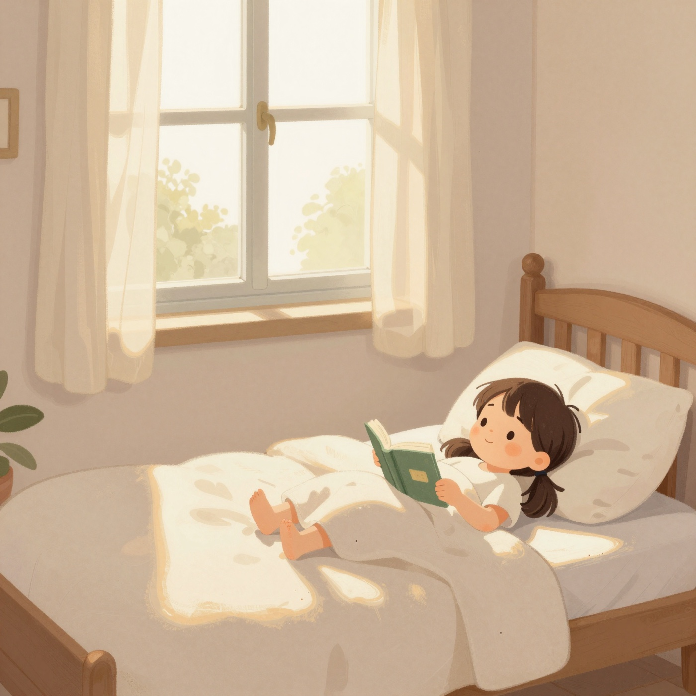
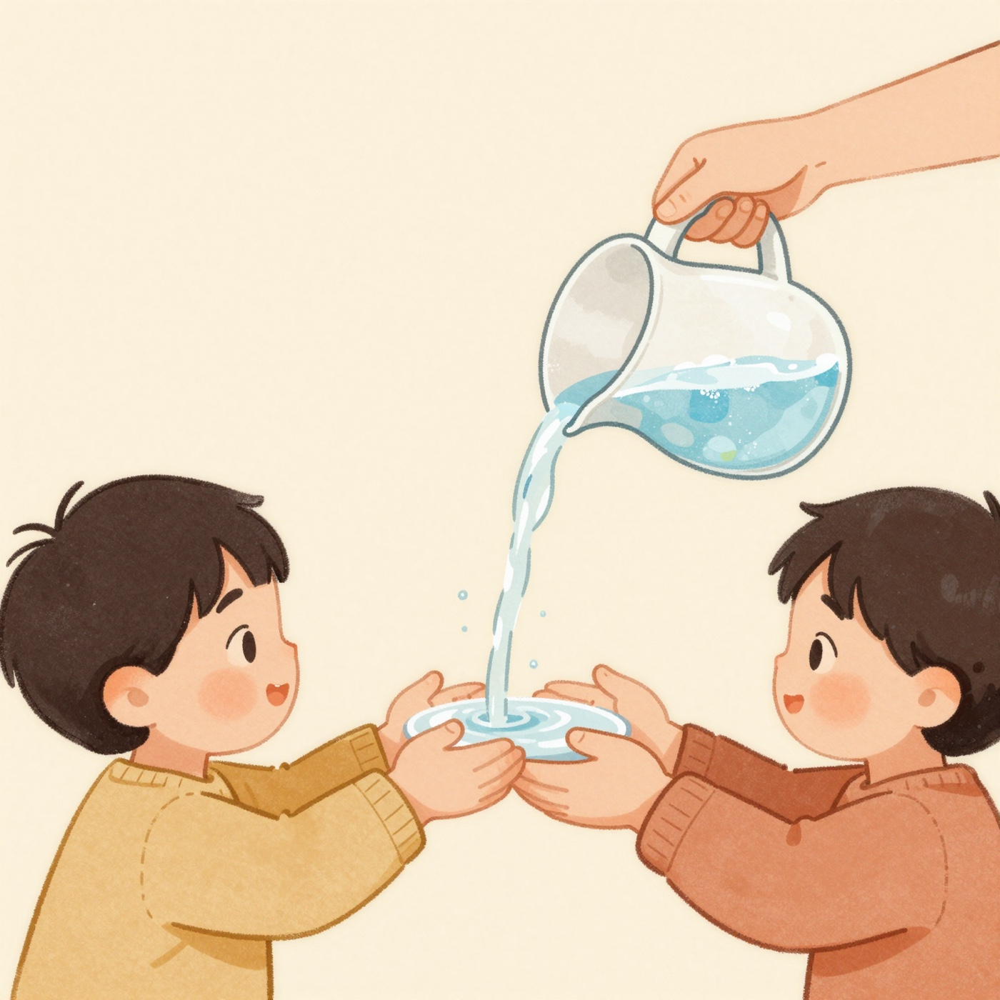
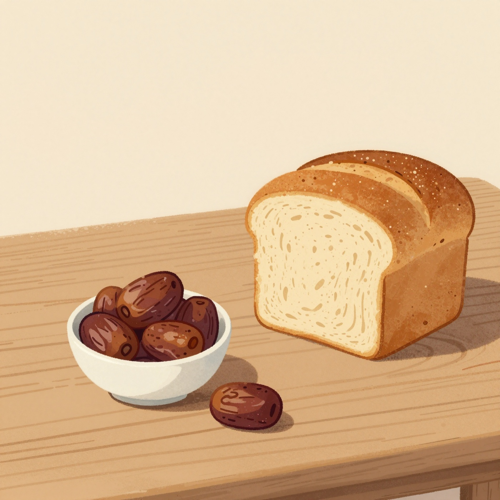
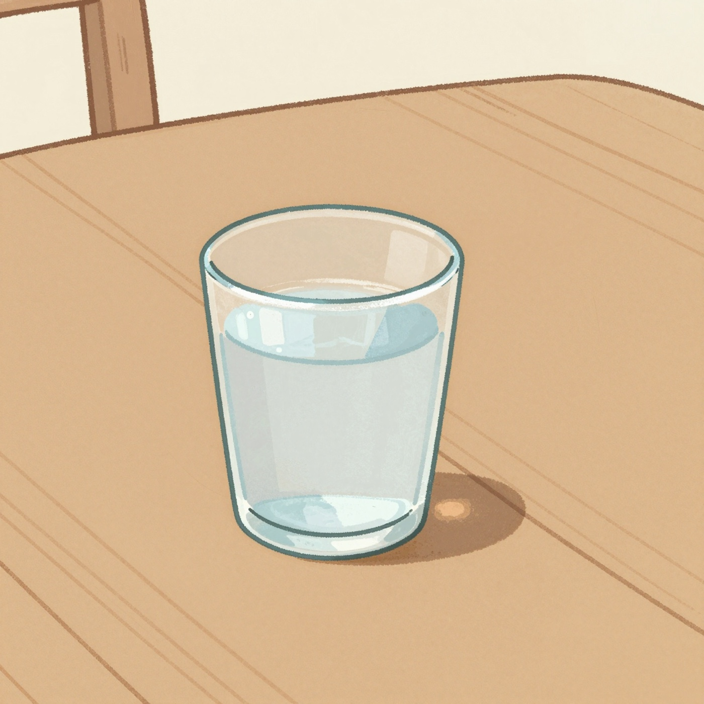
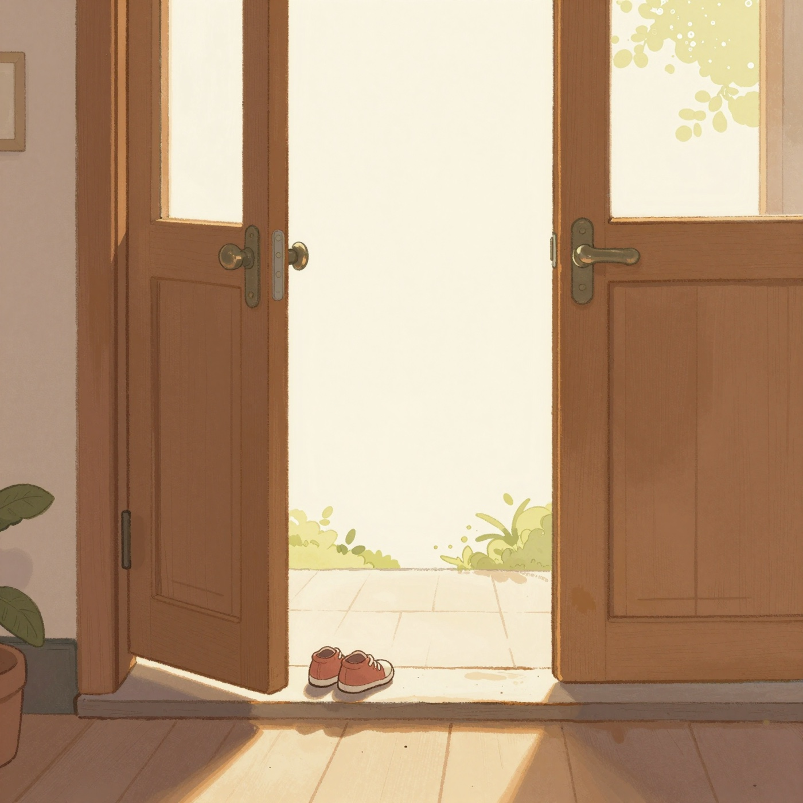
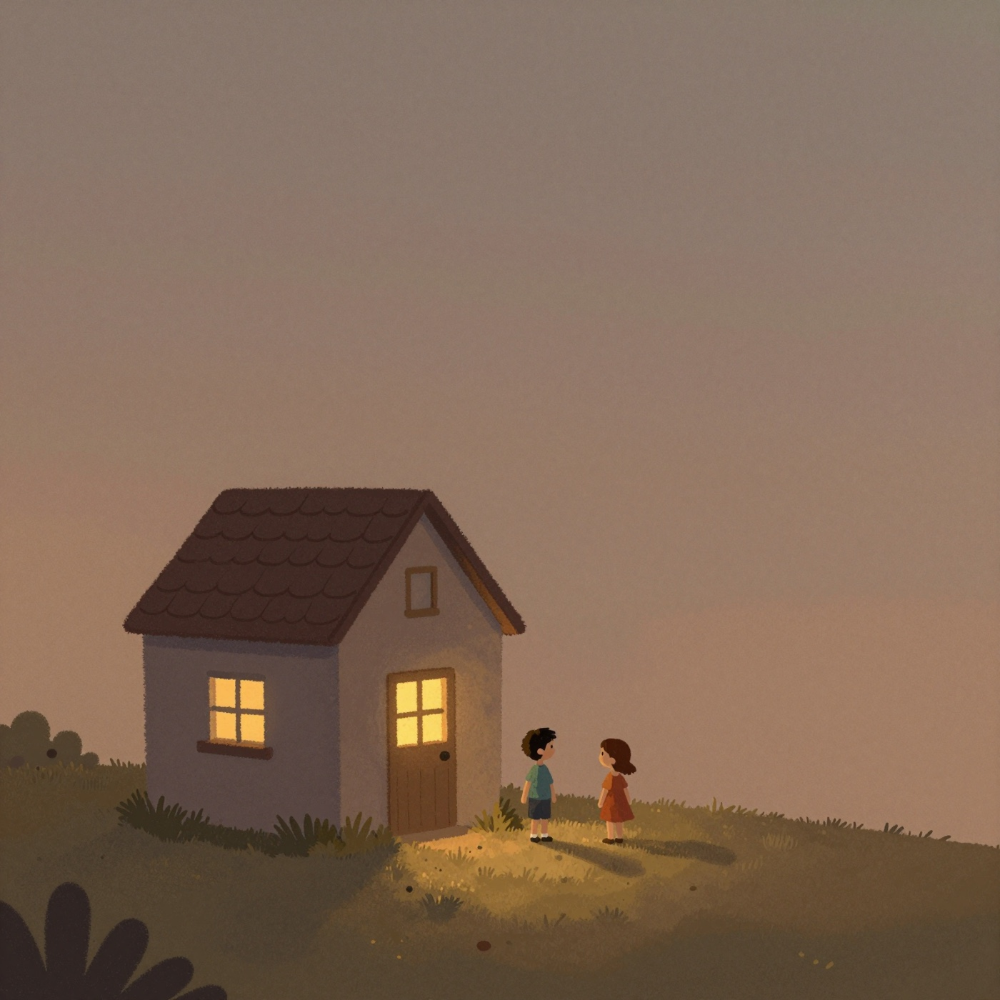
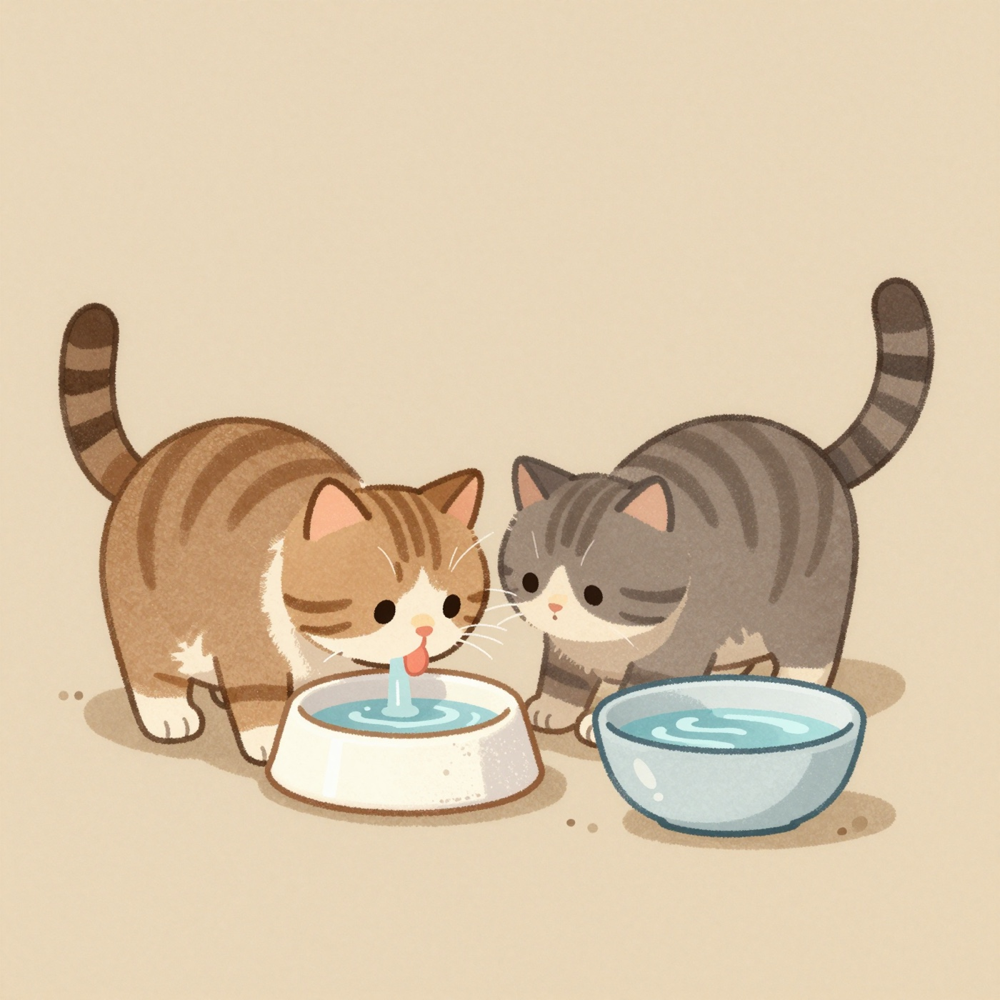
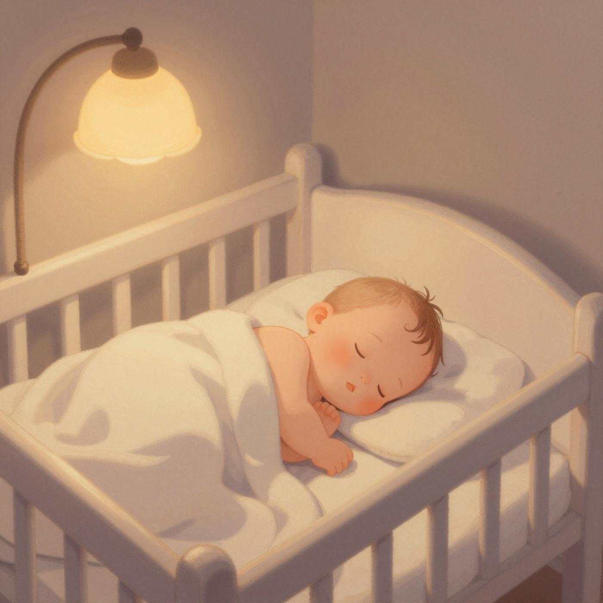
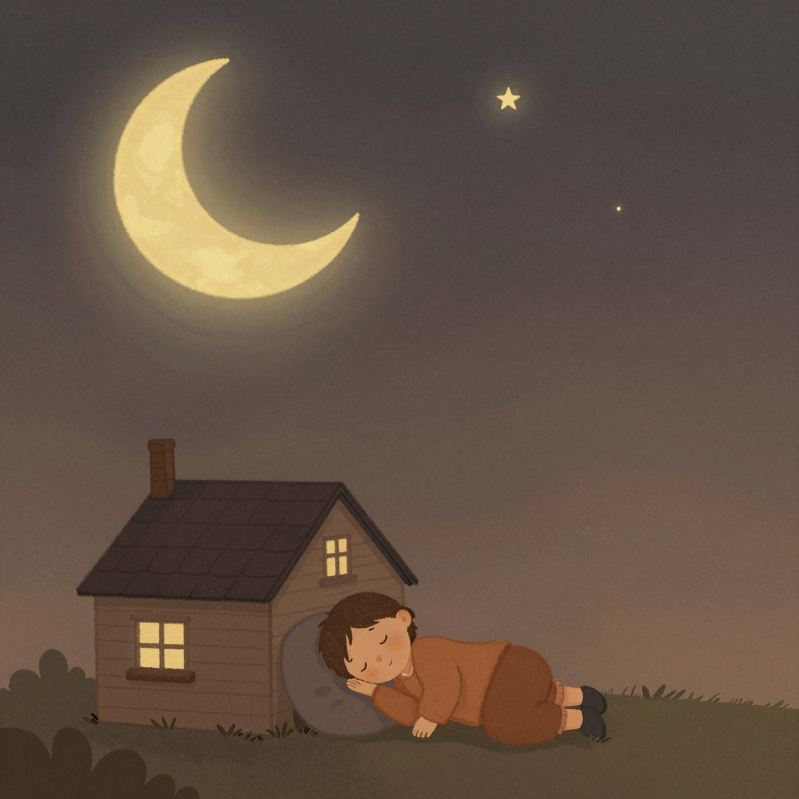

The light comes in at the window. You open your eyes, and the whole day is still in front of you.
Bismillah.
النور داخل من الشبّاك. بتفتح عينيك، واليوم كلّه لسّه قدّامك.
بِسمِ الله.

Cool water runs over your fingers, and over mine. Wash them well, little one.
Bismillah.
الميّة الساقعة بتجري على صوابعك، وعلى صوابعي. اغسلهم كويّس يا حبيبي.
بِسمِ الله.

Warm bread. Sweet dates. A small bowl that is yours and nobody else's.
Bismillah.
عيش سخن. وتمر حلو. وطبق صغيّر ليك لوحدك.
بِسمِ الله.

Small sips, and a rest in between. Nothing in the world is better than water when you are thirsty.
Bismillah.
بُقّ صغيّر، ونرتاح بين كل بُقّ والتاني. مفيش حاجة في الدنيا أحلى من الميّة وإنت عطشان.
بِسمِ الله.

Little shoes on. The door swings open. The air outside smells like morning.
Bismillah.
جزمة صغيّرة في رجليك. والباب بيتفتح. وريحة الصبح برّه.
بِسمِ الله.

Back through the same door, into the same warm room, where everyone was waiting for you.
Bismillah.
بنرجع من نفس الباب، لنفس الأوضة الدافية، اللي الكل كان مستنّيك فيها.
بِسمِ الله.

You fill the bowl, and the cat comes running. A small kindness is still a kindness.
Bismillah.
بتملا الطبق، والقطّة تيجي جري. والمعروف الصغيّر برضه معروف.
بِسمِ الله.

The lamp goes low. The blanket comes up. Your eyes are closing already, and that is allowed.
Bismillah.
النور بيوطى. والغطا بيتشدّ. وعينيك بتغمّض من دلوقتي، ومفيش مشكلة.
بِسمِ الله.

Every day begins with one word, and every day ends with it too.
Bismillah. Goodnight, Yusuf.
كل يوم بيبدأ بكلمة واحدة، وبيها بيخلص برضه.
بِسمِ الله. تصبح على خير، يا يوسف.